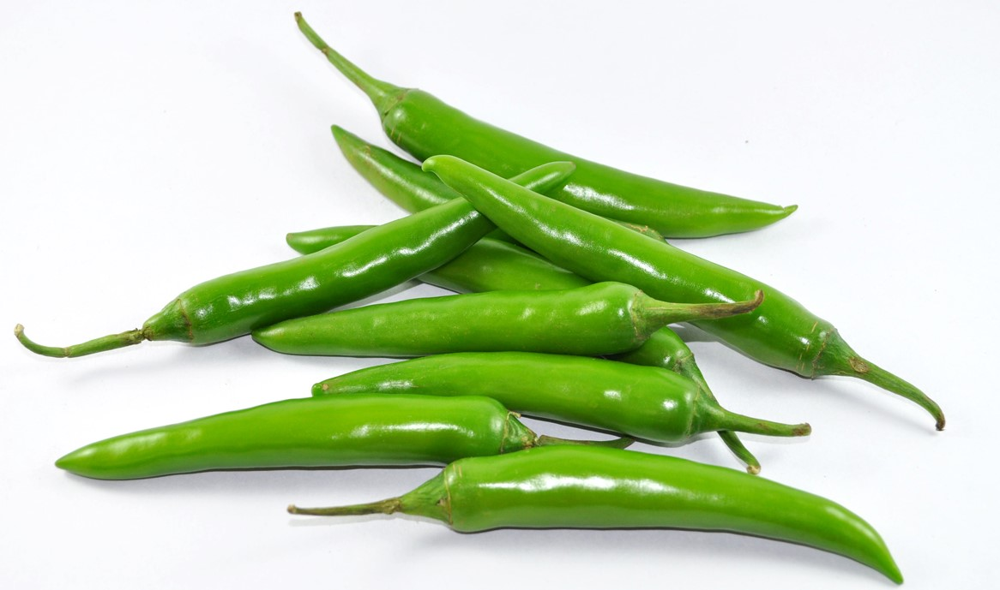

1. Seasons for Growing Green Chilies

Green chilies are warm-season crops that require consistent warmth to thrive. The ideal growing seasons include:
- Spring: Start seeds indoors 8-10 weeks before the last frost date. Transplant seedlings outdoors after the risk of frost has passed.
- Summer: Direct sow seeds outdoors once the soil temperature is consistently above 70°F (21°C). Ensure a sunny location for optimal growth.